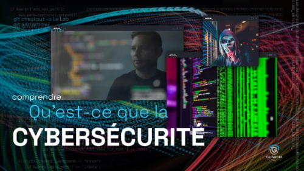

Bienvenue dans cette section dédiée à la cybersécurité. L'objectif est de fournir des bases solides pour comprendre les menaces numériques et apprendre à se défendre efficacement. La cybersécurité est un domaine essentiel à l'ère numérique.

I- Qu'est-ce que la Cybersécurité ?
La cybersécurité est un domaine essentiel qui englobe l'ensemble des pratiques, technologies et processus mis en œuvre pour protéger les systèmes informatiques, les réseaux et les données contre les cybermenaces.
Elle vise à garantir la confidentialité, l'intégrité et la disponibilité des informations, aussi bien pour les particuliers que pour les entreprises et les institutions gouvernementales.
Définitions des Concepts Clés
Confidentialité
Assurer que les informations sensibles ne soient accessibles qu'aux personnes autorisées. Cela inclut la protection des données personnelles, financières et professionnelles contre les accès non autorisés.
Intégrité
Garantir que les données restent exactes et complètes, sans altérations ou modifications non autorisées. Cela implique la prévention des manipulations malveillantes ou accidentelles des informations.
Disponibilité
La disponibilité consiste à garantir un accès continu aux données et services. Les pannes matérielles, les cyberattaques comme les DDoS ou les catastrophes naturelles peuvent compromettre la disponibilité. Les solutions incluent des sauvegardes régulières, des systèmes de reprise après sinistre et des réseaux redondants.
Authentification
Le processus d'authentification vérifie l'identité d'un utilisateur avant de lui accorder l'accès à un système. Les méthodes courantes incluent les mots de passe, les cartes à puce, et l'authentification à deux facteurs (2FA).
Chiffrement
Le chiffrement transforme des données lisibles en un format codé pour empêcher l'accès non autorisé. Les algorithmes de chiffrement courants incluent AES et RSA. Par exemple, les messages envoyés via des applications comme WhatsApp sont chiffrés de bout en bout.
Phishing
Le phishing est une technique d'attaque qui consiste à tromper une victime pour qu'elle divulgue des informations sensibles, comme des mots de passe ou des coordonnées bancaires. Les emails frauduleux imitant des entreprises légitimes sont une méthode courante de phishing.
Domaines clés de la cybersécurité
Sécurité des réseaux: Protection des infrastructures réseau contre les intrusions, les attaques et les accès non autorisés. Cela inclut l'utilisation de pare-feu, de systèmes de détection d'intrusion (IDS) et de réseaux privés virtuels (VPN).
Sécurité des applications: Assurer que les logiciels sont exempts de vulnérabilités pouvant être exploitées par des attaquants. Cela implique des tests de sécurité, des mises à jour régulières et des pratiques de codage sécurisé.
Sécurité de l'information: Protection des données sensibles contre le vol, la divulgation ou la destruction. Cela inclut la gestion des accès, le chiffrement des données et la classification des informations.
Sécurité opérationnelle: Processus et décisions qui gèrent et protègent les actifs de données. Cela englobe les politiques de sécurité, la gestion des incidents et la formation des employés.
Sécurité physique: Protection des équipements matériels contre les accès physiques non autorisés, les dommages ou le vol. Cela inclut la sécurisation des centres de données, des ordinateurs et des dispositifs de stockage.
Importance de la Cybersécurité dans le Monde Actuel
Avec l'essor des technologies numériques, la cybersécurité est devenue un enjeu crucial pour la protection des informations personnelles, des données d'entreprise et des infrastructures critiques. En effet, à mesure que nos vies se digitalisent, les cybermenaces évoluent de manière constante, et il devient indispensable de mettre en place des mesures de protection robustes pour garantir la sécurité de nos systèmes et de nos informations.
Les incidents de cybersécurité peuvent avoir des conséquences dévastatrices, allant de pertes financières importantes à des atteintes à la réputation, des violations de la vie privée, et des interruptions de service majeures. Ces attaques peuvent toucher non seulement les individus, mais également les organisations, affectant ainsi l'économie mondiale et la sécurité nationale.
Exemples Concrets de l'Importance de la Cybersécurité
Protection des données personnelles: Les informations sensibles telles que les numéros de carte de crédit, les dossiers médicaux et les identifiants de connexion doivent être sécurisées pour éviter le vol d'identité et les fraudes. Par exemple, une brèche de sécurité dans une base de données pourrait exposer des milliers de données personnelles, compromettant ainsi la vie privée des victimes et facilitant le vol d'identité.
Sécurité des entreprises: Les entreprises dépendent de leurs systèmes informatiques pour leurs opérations quotidiennes. Une cyberattaque peut perturber les activités, entraîner des pertes financières et nuire à la confiance des clients. Des exemples comme l'attaque de ransomware WannaCry ont paralysé des entreprises mondiales et mis en évidence l'importance d'une protection continue des infrastructures informatiques.
Protection des infrastructures critiques: Les réseaux électriques, les systèmes de santé, les services financiers et autres infrastructures essentielles doivent être protégés contre les cyberattaques pour assurer leur fonctionnement continu et éviter des conséquences catastrophiques. Par exemple, une attaque contre un hôpital pourrait entraîner la perte de données vitales sur les patients et compromettre les soins médicaux. De même, une cyberattaque ciblant un système financier peut causer une crise économique majeure.
Les Risques Associés à la Cybersécurité
Les risques de cyberattaques sont omniprésents et peuvent toucher n'importe quel secteur. Ils peuvent être dus à des vulnérabilités techniques, des erreurs humaines ou des attaques ciblées par des groupes organisés. Les menaces les plus courantes incluent :
Exploitation de vulnérabilités logicielles: Des failles de sécurité dans les logiciels peuvent être exploitées par des attaquants pour accéder à des systèmes ou voler des données.
Ingénierie sociale: Les attaques par ingénierie sociale, telles que le phishing, trompent les utilisateurs pour qu'ils divulguent des informations sensibles ou effectuent des actions compromettantes pour la sécurité de l'entreprise.
Attaques physiques: L'accès non autorisé à des systèmes par des moyens physiques (vol de matériel, accès non autorisé à un centre de données) représente également une menace pour la sécurité.
Conclusion
En résumé, la cybersécurité est essentielle non seulement pour protéger les informations personnelles des individus mais aussi pour préserver le bon fonctionnement des entreprises et des infrastructures critiques. Les cybermenaces sont de plus en plus sophistiquées et leur impact peut être dramatique. Il est donc primordial d’adopter des pratiques de cybersécurité rigoureuses et de mettre en œuvre des solutions adaptées pour prévenir, détecter et répondre aux cyberattaques. Les efforts continus dans le domaine de la cybersécurité sont nécessaires pour garantir la sécurité des systèmes numériques et protéger les ressources et données de manière efficace.
Les Menaces Courantes
Voici un aperçu des menaces majeures :
Ransomwares: Ces logiciels malveillants chiffrent vos données et exigent une rançon pour les restituer.
Spyware: Ces programmes espionnent vos activités pour collecter des informations sensibles.
Malwares: Tout logiciel conçu pour causer des dommages, y compris les virus et chevaux de Troie.
Attaques DDoS: Elles visent à surcharger un site ou un service pour le rendre inaccessible.
Comment Se Protéger
Pour renforcer votre cybersécurité, adoptez les pratiques suivantes :
Utilisez des mots de passe robustes: Combinez lettres, chiffres et caractères spéciaux.
Mettez à jour vos logiciels: Les mises à jour corrigent les vulnérabilités connues.
Activez l'authentification à deux facteurs: Ajoutez une couche supplémentaire de sécurité.
Évitez les liens suspects: Ne cliquez jamais sur des liens dans des emails ou messages non sollicités.
Outils Essentiels
Gestionnaires de mots de passe: Stockez et générez des mots de passe complexes (ex. : Bitwarden).
Antivirus: Protégez vos appareils contre les malwares (ex. : Malwarebytes).
VPN: Sécurisez vos connexions Internet sur les réseaux publics (ex. : NordVPN).
Firewalls: Bloquez le trafic non autorisé sur votre réseau.
Études de Cas
Apprenez des grandes cyberattaques :
WannaCry: Une attaque mondiale en 2017 utilisant des ransomwares pour bloquer des milliers de systèmes. Leçons : Installez toujours les mises à jour de sécurité.
SolarWinds: En 2020, cette attaque sophistiquée a compromis des systèmes critiques dans le monde entier. Leçons : Surveillez les accès tiers à vos systèmes.
Exercices Pratiques
Mettez vos connaissances en pratique :
Identifiez un email de phishing et repérez ses éléments suspects.
Configurez un mot de passe robuste et testez sa solidité avec un outil en ligne.
Configurez un pare-feu pour sécuriser votre réseau domestique.
Ressources Complémentaires
Pour approfondir vos connaissances :
Cybrary : Plateforme d'apprentissage pour débutants et experts.